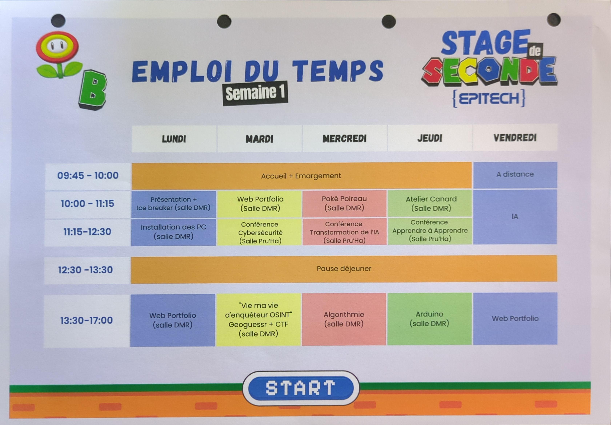
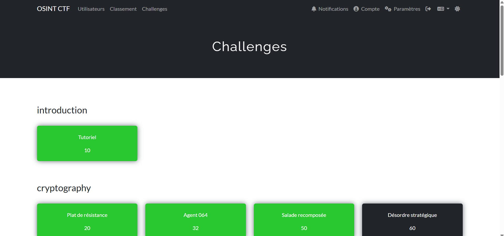
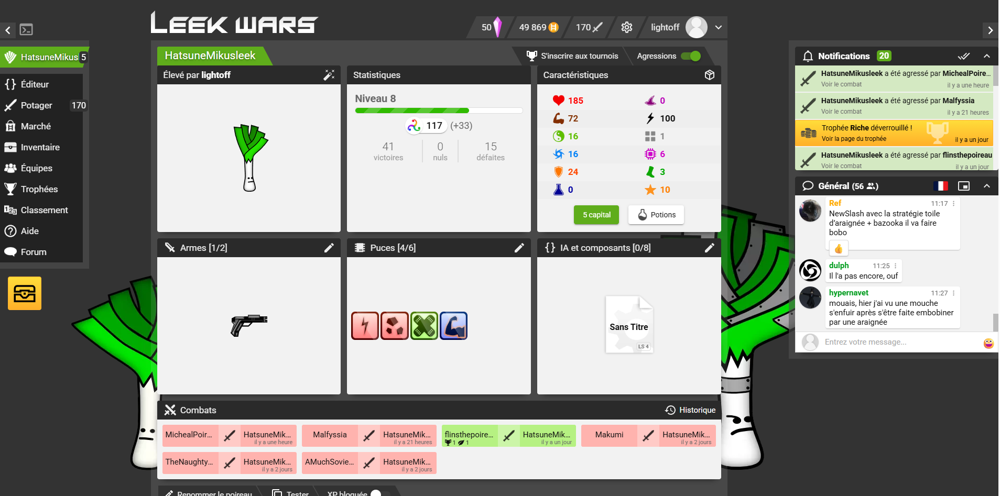
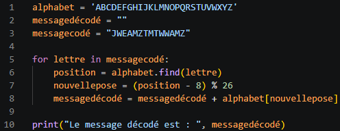
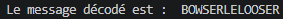
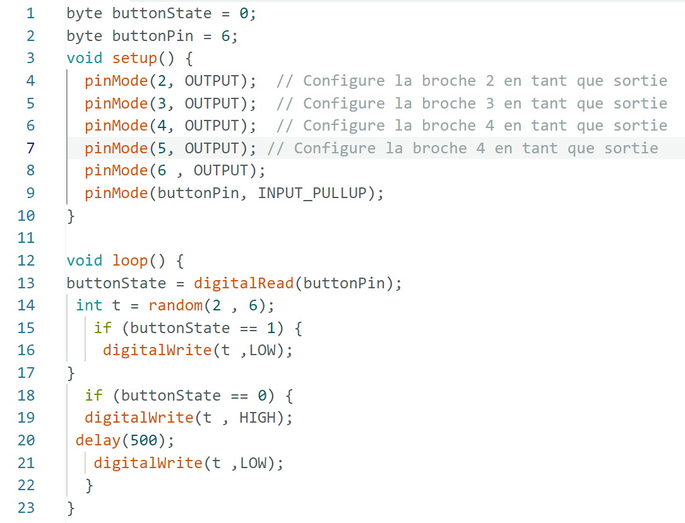
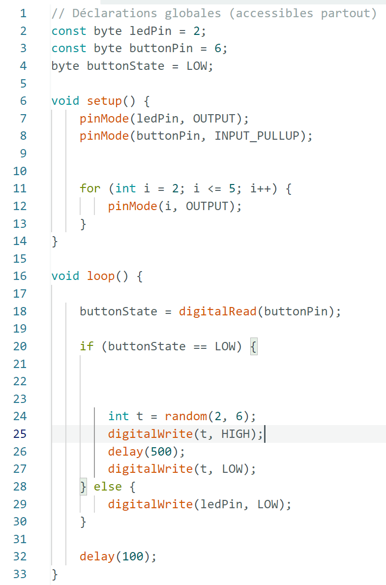
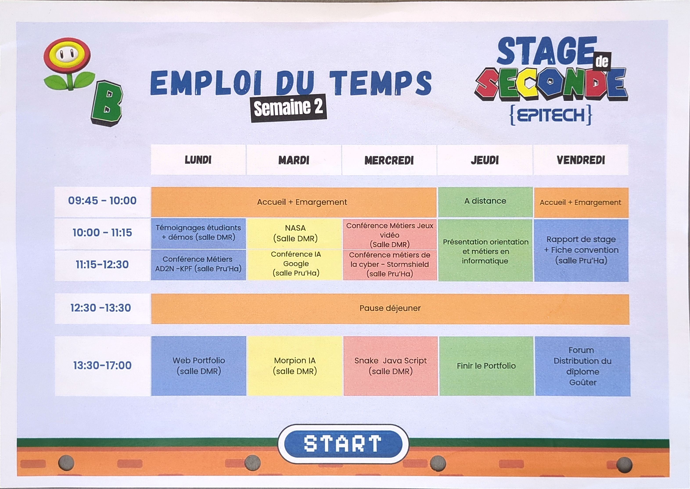
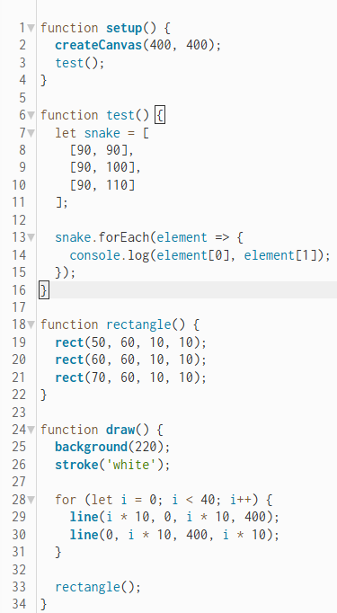
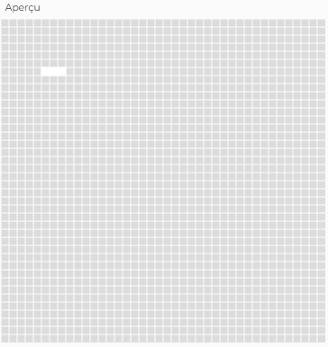

A propos du portfolio
Au cours du stage nous avons dû réaliser un portfolio (site internet en html/css/JavaScript) pour nous présenter et présenter notre stage à EPITECH
La première semaine de stage
L'emploi du temps de la 1ère semaine de stage

Les conférences
Nous avons assisté à plusieurs conférences lors de cette première semaine de stage à EPITECH :
La cybersécurité
Les transformations dûes à l'IA
Apprendre à apprendre
L'IA
Les ateliers
Nous avons réalisé au cours de cette première semaine différents ateliers:
L'atelier OSINT ou Open Source INTelligence
Dans cet atelier nous avons dû résoudre les énigmes qui nous étais proposé.
La réponse était toujours sous le format ctf{réponse}.

L'atelier Leek Wars
Dans cet atelier nous avons dû développer notre propre intelligence artificielle grâce au language LeekScript
(le language utiliser pour créer les IA dans le jeu) pour détruire notre adversaire.

L'atelier recodage du code césar
Dans cet atelier nous avons dû développer un code pour déchiffrer un message crypté par le code césar.
Mais qu'est-ce que le code césar ?
C'est une méthode de chiffrement par décallage, le texte chiffré s'obtient donc en remplaçant chaque lettre du texte clair original par une lettre à distance fixe, toujours du même côté, dans l'ordre de l'alphabet.
Pour les dernières lettres (dans le cas d'un décalage à droite), on reprend au début.


L'atelier des canards
Dans cet atelier nous avons dû faire le plus de canard possible avec un pack de lego spécial.
Dans un premier temps nous devions dessiner les canards sur une feuille avant de les réaliser pluis dans un deuxième les dessiner après les avoir réalisé
Nous nous sommes aperçu que les dessiner après les avoir réalisés était plus simple que les dessiner avant.
Cette expérience traduit la pédagogie chez EPITECH
L'atelier arduino
Dans cet atelier nous avons dû reproduire le jeu simon grâce à une carte arduino.
Le jeu Simon est un jeu où il faut retenir une combinaison de couleurs qui grandit manche après manche.
On commence par retenir une couleur, puis deux, puis trois… jusqu’à ce que l’on se trompe ou que l’on prenne trop de temps pour appuyer sur l’un des boutons.
Nous avons donc réalisé les branchement et le code nécessaire pour arriver à reproduire ce jeu.


La seconde semaine de stage
L'emploi du temps de la 2e semaine de stage

Les conférences
Nous avons assisté à plusieurs conférences lors de cette seconde semaine de stage à EPITECH :
Des témoignages des étudiants avec des démots sur leurs projets
Les ESN (entreprises de services numériques) avec l'entreprise KPF-SI
L'IA et google
Les métiers des jeux-vidéos
Les métiers de la cybersécurité avec l'entreprise Stormshield
L'orientation et les métiers de l'informatique
Les ateliers
Nous avons réalisé au cours de cette seconde semaine différents ateliers:
L'atelier Nasa
Dans cet atelier nous étions à la place d'astronaute qui doivent rejoindre le QG sur la lune alors qu'ils se sont crachés à 300Km de celui-ci et que seulemnt 15 objets ne sont pas endomagés. Nous devions les classer du plus important au moins important
L'atelier morpion IA
Dans cet atelier nous avons dû finaliser un code déjà existant pour pouvoir jouer au morpion avec une IA.
L'atelier snake Java Script
Dans cet atelier nous avons dû reproduire le jeu snake en Java Script.

